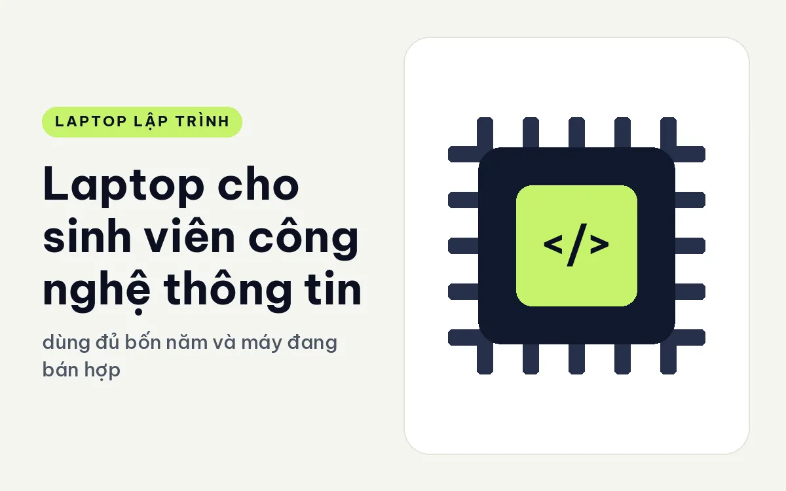
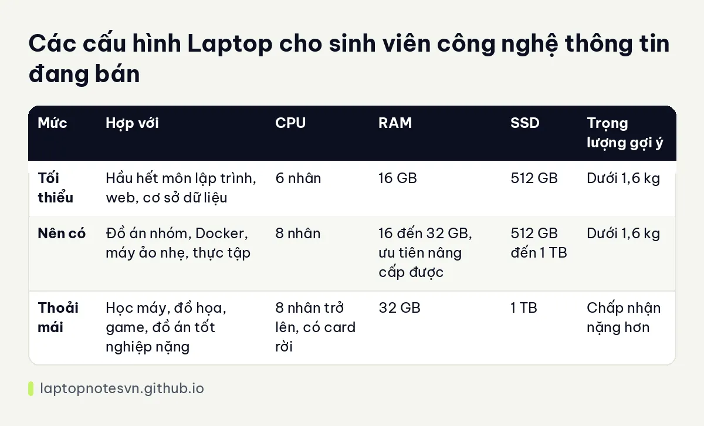

Laptop cho sinh viên công nghệ thông tin - dùng đủ bốn năm và máy đang bán hợp

Sinh viên công nghệ thông tin thường mua laptop một lần cho cả bốn năm. Năm nhất học lập trình căn bản, năm hai thêm cấu trúc dữ liệu và cơ sở dữ liệu, năm ba bắt đầu đồ án nhóm với web hoặc di động, năm cuối có khi làm trí tuệ nhân tạo hay hệ thống phân tán. Máy chọn đúng từ đầu phải chịu được đoạn đường nhu cầu tăng dần đó.
Bài này đưa ra những điểm cần nhìn khi chọn máy cho sinh viên, bảng cấu hình ba mức và hai máy đang bán hợp. Các mức bên dưới là kinh nghiệm tư vấn chung, mỗi trường và mỗi chuyên ngành có yêu cầu riêng, bạn nên hỏi thêm giảng viên khi cần.
Những điều sinh viên cần ở một chiếc laptop
Đầu tiên là sự bền bỉ và trọng lượng. Sinh viên mang máy đi học mỗi ngày, ngồi quán cà phê, ngồi thư viện, nên một chiếc máy 1,3 đến 1,5 kg dễ chịu hơn nhiều so với máy 2,5 kg. Pin khỏe cũng quan trọng vì ổ điện ở giảng đường không phải lúc nào cũng có.
Thứ hai là RAM đủ dùng lâu. 16GB là mức khởi đầu hợp lý (bài lập trình viên cần bao nhiêu RAM giải thích vì sao), nhưng nếu máy cho phép nâng cấp thì càng tốt, vì năm ba năm tư bạn sẽ chạy máy ảo, Docker hoặc trình giả lập. Một máy hàn chết RAM phải chọn 32GB ngay từ đầu nếu muốn dùng đến lúc ra trường.
Thứ ba là cổng kết nối. Sinh viên cắm máy chiếu, ổ USB, đôi khi cả mạch Arduino hay bo mạch thí nghiệm. Có HDMI và vài cổng USB-A giúp bạn tránh phải mang theo hub.
Cuối cùng là thứ ít ai để ý: bảo mật và bảo hành. Máy có vân tay, có TPM giúp bảo vệ bài tập và tài khoản cá nhân, còn bảo hành đủ dài giúp bạn yên tâm trong quãng bốn năm dài.
Mức máy theo khối lượng việc
| Mức | Hợp với | CPU | RAM | SSD | Trọng lượng gợi ý |
|---|---|---|---|---|---|
| Tối thiểu | Hầu hết môn lập trình, web, cơ sở dữ liệu | 6 nhân | 16 GB | 512 GB | Dưới 1,6 kg |
| Nên có | Đồ án nhóm, Docker, máy ảo nhẹ, thực tập | 8 nhân | 16 đến 32 GB, ưu tiên nâng cấp được | 512 GB đến 1 TB | Dưới 1,6 kg |
| Thoải mái | Học máy, đồ họa, game, đồ án tốt nghiệp nặng | 8 nhân trở lên, có card rời | 32 GB | 1 TB | Chấp nhận nặng hơn |
Nếu bạn mới bắt đầu và chưa rõ mình cần gì, hãy đọc bài laptop cho người mới học code để thấy mức cấu hình khởi đầu hợp lý.

Máy cụ thể nên xem trước
Với sinh viên cần máy bền, gõ tốt, dùng qua cả bốn năm, Lenovo ThinkPad E14 Gen 8 (2026) là lựa chọn đáng cân nhắc. Máy nặng khoảng 1,34 đến 1,4 kg. Bản AMD Ryzen AI 5 330 có hai khe SO-DIMM DDR5-5600 và nâng tối đa 64GB, tức là bạn mua RAM vừa phải rồi nâng sau khi cần. Bản Intel Core 7 350 có một khe SO-DIMM, nâng tối đa 32GB, kênh đơn, và có hai cổng Thunderbolt 4. Với mục đích dùng lâu dài thì khả năng nâng RAM của bản AMD là điểm cộng.
Nếu ngân sách rộng hơn và muốn máy nhẹ, hãy xem HP ProBook 4 G2i 14 AI (2026). Máy dùng Ultra 5 325, RAM DDR5 16GB, màn FHD+ cảm ứng, hai cổng USB-C 20Gbps, hai USB-A và HDMI 2.1. Máy có TPM 2.0, cảm biến vân tay và bàn phím chống tràn, hợp với người hay ngồi quán và mang theo đồ uống. Cảm ứng tiện khi bạn ghi chú bằng bút hoặc đọc tài liệu.
Chọn theo chuyên ngành
Ngành phần mềm, hệ thống thông tin và mạng máy tính chạy tốt trên cấu hình vừa. Điều quan trọng nhất là RAM không bị hụt và bàn phím dễ chịu. Ngành an toàn thông tin thường chạy nhiều máy ảo để thực hành tấn công, phòng thủ, nên RAM lớn cần được ưu tiên hơn card rời.
Ngành khoa học dữ liệu và trí tuệ nhân tạo ở mức nhập môn vẫn học được trên máy thường, vì nhiều bài tập dùng nền tảng đám mây miễn phí hoặc trường cấp tài khoản. Chỉ khi bạn tự huấn luyện mô hình cục bộ, chuyện card rời mới đáng bàn.
Lưu ý khi mua và dùng
- Kiểm tra chính sách bảo hành, đặc biệt khi máy phải dùng bốn năm và hay bị va chạm trong cặp.
- Dán hoặc đặt máy trong túi chống sốc, bàn phím và màn hình là phần dễ hỏng nhất.
- Cài sớm công cụ sao lưu tự động, vì mất bài đồ án sát hạn nộp là chuyện đau đầu rất thật.
- Học cách dùng Git ngay từ năm nhất, thói quen này theo bạn đến khi đi làm.
- Giữ pin ở mức vừa phải, đừng để cắm sạc suốt ở mức đầy nếu máy có tùy chọn bảo vệ pin.
Khi nào nên nâng RAM, nâng ổ thay vì mua máy mới là câu hỏi sinh viên nào cũng gặp. Bài nâng cấp RAM và SSD sau khi mua laptop dev trả lời kỹ chuyện này.
Đăng ngày 09/11/2026